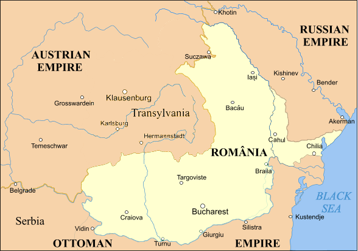

Unirea Principatelor Române
Unirea Principatelor Române a avut loc la jumătatea secolului al XIX-lea prin unirea statelor Moldova și Țara Românească sub numele Principatele Unite ale Moldovei și Țării Românești. Procesul unirii, bazat pe puternica apropiere culturală și economică între cele două țări, a cunoscut o etapă decisivă, care s-a dovedit a fi ireversibilă, prin alegerea colonelului moldovean Alexandru Ioan Cuza ca domnitor al ambelor principate, la 5 ianuarie 1859 în Moldova și la 24 ianuarie 1859 în Țara Românească.
Procesul a început odată cu adoptarea Regulamentelor Organice între 1831-1832 în Muntenia și Moldova, care stipulau necesitatea unificării politice, urmate de acorduri vamale între 1833 și 1835 și lichidarea posturilor vamale între cele două țări începând cu 1 ianuarie 1848, în timpul domniilor lui Mihail Sturdza, respectiv Gheorghe Bibescu. Deznodământul războiului Crimeii a stăvilit pentru un timp ambițiile geopolitice ale imperiului rus la Dunărea de jos, fără a consolida efectiv imperiul Otoman de care depindeau principatele, ceea ce a creat un context favorabil realizării unirii. Votul popular favorabil unirii în ambele țări, rezultat în urma unor Adunări ad-hoc în 1857 a dus la Convenția de la Paris din 1858, o înțelegere între Marile Puteri, prin care se accepta o uniune mai mult formală între cele două țări, cu guverne diferite și cu unele instituții comune. La începutul anului 1859 liderul unionist moldovean Alexandru Ioan Cuza a fost ales ca domnitor al Moldovei și Țării Românești, act care a adus cele două state într-o uniune personală. În 1862, cu ajutorul unioniștilor din cele două țări, Cuza a unificat Parlamentul și Guvernul, realizând unirea politică. După înlăturarea sa de la putere în 1866, unirea a fost consolidată de succesorul său, principele Carol de Hohenzollern-Sigmaringen, iar constituția adoptată în acel an a denumit noul stat România.
Unirea a fost recunoscută de marile puteri europene prin Tratatul de la Paris din 1858 și a fost consolidată de domnitorul Carol I al României, care a fost proclamat rege al României la 26 martie 1881. Unirea Principatelor Române a fost un pas important în procesul de formare a statului național român modern, care a fost completat prin recunoașterea independenței României de către Imperiul Otoman la 13 iulie 1878 și de către celelalte mari puteri europene la 26 martie 1881.
Principatele Unite ale Moldovei și Țării Românești
Principatele Unite Moldova și Țara Românească, uzual Principatele Unite, au fost un stat format prin unirea dintre Principatele Dunărene Moldova și Țara Românească în perioada 1856-1862, printr-un proces al cărui moment definitoriu a fost constituirea în 1859 a uniunii personale prin alegerea ca domnitor a lui Alexandru Ioan Cuza. Statul acoperea regiunile istorice Oltenia, Muntenia, și Moldova Occidentală, precum și sudul Basarabiei (zona Cahul, Bolgrad și Ismail). Unirea politică dintre cele două principate a fost primul pas politic spre crearea României ca un singur stat (unitar), în 1866, stat ce avea să devină independent în 1878 și să fie proclamat regat în 1881.